Code
library(tidyverse)
library(tidycensus)
library(sf)
library(caret)
library(spdep)
Sys.getenv("CENSUS_API_KEY") != "" # should print TRUE[1] TRUEMUSA 5080 · Integrates Weeks 1–5 · Due Friday, October 16
This is not a competition. There’s no leaderboard and no target RMSE. The goal is to practice the full prediction workflow on a question you choose, and to find out what actually helps. Some features you’re sure will help won’t, and some you add on a whim will. Both are findings.
You’ll:
Timing. Parts 1–4 use only what we’ve covered through Week 5. You can finish them before the October 9 lecture. Part 5 is new material; the lecture explains it, and the instructions below give you the essentials.
Type the code yourself. The worked examples show the pattern. Your job is to apply it to your outcome and your data choices.
Every model is cross-validated on the same tracts with the same folds, so the rows in your model log are comparable. If a new variable has missing values, fill them (for example, 0 for a count, or the median with a note) or choose a different variable. The cv_rmse() helper below will stop and tell you if you break this rule.
Your outcome comes from the 2019–2023 ACS. Pull open data from 2023 or earlier (2021–2023 is ideal). Using 2025 data to predict a 2023 outcome uses information from the future, which a real prediction model would never have.
Don’t use any variable that’s built from your outcome or measures the same thing another way. Ask yourself: would an agency trying to predict this outcome for a tract have this variable? If the answer is “only because it’s basically the outcome,” leave it out.
library(tidyverse)
library(tidycensus)
library(sf)
library(caret)
library(spdep)
Sys.getenv("CENSUS_API_KEY") != "" # should print TRUE[1] TRUEThis function runs 10-fold cross-validation with the same seed every time, so every model in your log is tested on the same folds. You don’t need to change it. Read it once so you know what it does.
ctrl <- trainControl(method = "cv", number = 10)
cv_rmse <- function(formula, data) {
df <- if (inherits(data, "sf")) st_drop_geometry(data) else data
vars <- all.vars(formula)
bad <- vars[sapply(vars, function(v) any(is.na(df[[v]])))]
if (length(bad) > 0) {
stop("These variables have NAs: ", paste(bad, collapse = ", "),
". Fill them or choose another variable (Rule 1: don't drop rows).")
}
set.seed(5080)
fit <- train(formula, data = df, method = "lm", trControl = ctrl)
fit$results$RMSE
}Every time you fit a new model, add a row. By the end, this table is the story of your assignment.
model_log <- tibble(
model = character(),
added = character(),
cv_rmse = numeric(),
notes = character()
)Pick a tract-level ACS variable for Philadelphia that matters for policy. Two outcomes are off limits: median gross rent (we did it in lab) and median home value (save it for A4).
Some ideas if you’re stuck:
| Outcome | Why an agency might care | ACS table |
|---|---|---|
| % of households with no vehicle | Transit planning | B08201 or B25044 |
| Mean travel time to work | Access to jobs | B08013_001 ÷ B08303_001 |
| % of people below poverty | Targeting services | B17001 |
| % of housing units vacant | Housing and blight | B25002 |
| % of households overcrowded | Housing conditions | B25014 |
Use load_variables(2023, "acs5") to browse and find exact variable codes.
Choose three to five ACS predictors for your baseline model. They should be things that plausibly relate to your outcome, but none of them may be built from your outcome (Rule 3).
philly_tracts <- get_acs(
geography = "tract",
state = "PA",
county = "Philadelphia",
variables = c(
total_pop = "B01003_001",
total_hh = "B08201_001",
no_vehicle = "B08201_002",
medhhinc = "B19013_001",
publictransit = "B08301_010",
bachelors = "B15003_022"
# your outcome's numerator and denominator (or median), e.g.:
# ___ = "___",
# ___ = "___",
# your baseline predictors, e.g.:
# ___ = "___"
),
year = 2023,
output = "wide",
geometry = TRUE
) %>%
st_transform(2272)
|
| | 0%
|
|= | 1%
|
|== | 2%
|
|== | 3%
|
|=== | 4%
|
|==== | 5%
|
|==== | 6%
|
|===== | 7%
|
|====== | 8%
|
|====== | 9%
|
|======= | 10%
|
|======== | 11%
|
|======== | 12%
|
|========= | 13%
|
|========== | 14%
|
|========== | 15%
|
|=========== | 16%
|
|============ | 17%
|
|============= | 18%
|
|============= | 19%
|
|============== | 20%
|
|============== | 21%
|
|=============== | 22%
|
|================ | 23%
|
|================ | 24%
|
|================= | 25%
|
|================== | 25%
|
|=================== | 26%
|
|=================== | 27%
|
|==================== | 28%
|
|===================== | 29%
|
|===================== | 30%
|
|====================== | 31%
|
|======================= | 32%
|
|======================= | 33%
|
|======================== | 34%
|
|========================= | 35%
|
|========================= | 36%
|
|========================== | 37%
|
|=========================== | 38%
|
|=========================== | 39%
|
|============================ | 40%
|
|============================= | 41%
|
|============================== | 42%
|
|============================== | 43%
|
|=============================== | 44%
|
|================================ | 45%
|
|================================ | 46%
|
|================================= | 47%
|
|================================== | 48%
|
|================================== | 49%
|
|=================================== | 50%
|
|==================================== | 51%
|
|===================================== | 52%
|
|===================================== | 53%
|
|====================================== | 54%
|
|======================================= | 55%
|
|======================================= | 56%
|
|======================================== | 57%
|
|========================================= | 58%
|
|========================================= | 59%
|
|========================================== | 60%
|
|=========================================== | 62%
|
|============================================ | 63%
|
|============================================= | 64%
|
|============================================= | 65%
|
|============================================== | 66%
|
|=============================================== | 67%
|
|=============================================== | 68%
|
|================================================ | 69%
|
|================================================= | 70%
|
|================================================= | 71%
|
|================================================== | 72%
|
|=================================================== | 73%
|
|=================================================== | 74%
|
|==================================================== | 75%
|
|===================================================== | 76%
|
|====================================================== | 76%
|
|====================================================== | 77%
|
|======================================================= | 78%
|
|======================================================== | 79%
|
|======================================================== | 80%
|
|========================================================= | 81%
|
|========================================================== | 82%
|
|=========================================================== | 84%
|
|=========================================================== | 85%
|
|============================================================ | 86%
|
|============================================================= | 87%
|
|============================================================= | 88%
|
|============================================================== | 88%
|
|=============================================================== | 89%
|
|=============================================================== | 90%
|
|================================================================ | 91%
|
|================================================================= | 92%
|
|================================================================= | 93%
|
|================================================================== | 94%
|
|=================================================================== | 95%
|
|=================================================================== | 96%
|
|==================================================================== | 97%
|
|===================================================================== | 98%
|
|===================================================================== | 99%
|
|======================================================================| 100%philly_tracts <- philly_tracts %>%
mutate(
y = (no_vehicleE / total_hhE) * 100,
y_moe = tidycensus::moe_prop(
no_vehicleE,
no_vehicleM,
total_hhE,
total_hhM
),
y_cv = (y_moe / 1.645) / y * 100,
medhhinc = replace_na(medhhincE, 0),
publictransit = publictransitE,
bachelors = bachelorsE
)Before you commit, check three things.
# How many tracts have no value for your outcome?
sum(is.na(philly_tracts$y))[1] 20# How reliable is it?
summary(philly_tracts$y_cv) Min. 1st Qu. Median Mean 3rd Qu. Max. NAs
1.853 9.654 20.404 Inf 49.079 Inf 20 philly_tracts %>%
mutate(reliability = case_when(
y_cv < 12 ~ "High",
y_cv <= 40 ~ "Moderate",
TRUE ~ "Low"
)) %>%
st_drop_geometry() %>%
count(reliability) reliability n
1 High 127
2 Low 137
3 Moderate 144# What does the distribution look like?
ggplot(philly_tracts, aes(x = y)) +
geom_histogram(bins = 30) +
theme_minimal()
If more than about a third of tracts have low reliability, consider a different outcome, or one built from larger counts. Write your reasoning either way.
Answer (2–3 sentences): What is your outcome, why would an agency want to predict it, and how reliable is it?
I am predicting percentage of households without a car using median household income, workers commuting by public transit, and people with a bachelor’s degree or higher. This is useful for public transit planning agencies because households without a car are more likely to need or want to use public transit.
Your answer:
Filter once, here, and never again. Every later step uses tracts.
tracts <- philly_tracts %>%
filter(total_popE > 0,
!is.na(y)
# add !is.na() for each baseline predictor like in the in-class lab
)
nrow(philly_tracts)[1] 408nrow(tracts)[1] 388Answer: How many tracts did you lose, and what kinds of places are they?
I lost 20 tracts, these are tracts that have large commercial areas and stadiums. Your answer:
Plot your outcome against each predictor before modeling (the Week 3 habit).
plot1 <- ggplot(tracts, aes(x = medhhincE, y = y)) +
geom_point(alpha = 0.5) +
geom_smooth(method = "lm", se = FALSE, color = "red") +
scale_x_continuous(labels = scales::dollar) +
scale_y_continuous(labels = scales::percent) +
labs(x = "Median household income", y = "Percentage of households without a car",
title = "Households without a car and income, Philadelphia tracts") +
theme_minimal()
plot2 <- ggplot(tracts, aes(x = publictransitE, y = y)) +
geom_point(alpha = 0.5) +
geom_smooth(method = "lm", se = FALSE, color = "red") +
scale_x_continuous(labels = scales::dollar) +
scale_y_continuous(labels = scales::percent) +
labs(x = "Count of workers using public transit for commuting", y = "Percentage of households without a car",
title = "Households without a car and public transit commutes, Philadelphia tracts") +
theme_minimal()
plot3 <- ggplot(tracts, aes(x = bachelorsE, y = y)) +
geom_point(alpha = 0.5) +
geom_smooth(method = "lm", se = FALSE, color = "red") +
scale_x_continuous(labels = scales::dollar) +
scale_y_continuous(labels = scales::percent) +
labs(x = "Count of people with a bachelor's degree or higher", y = "Percentage of households without a car",
title = "Households without a car and people with a bachelor's degree or higher, Philadelphia tracts") +
theme_minimal()
# one scatterplot per predictor, e.g.:
# ggplot(tracts, aes(x = ___, y = y)) + geom_point(alpha = 0.5) +
# geom_smooth(method = "lm", se = FALSE) + theme_minimal()
plot1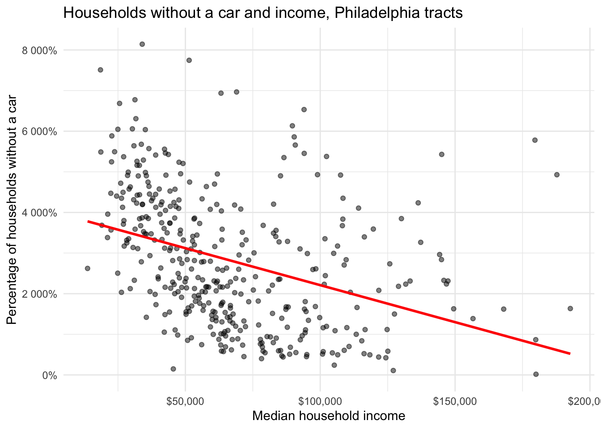
plot2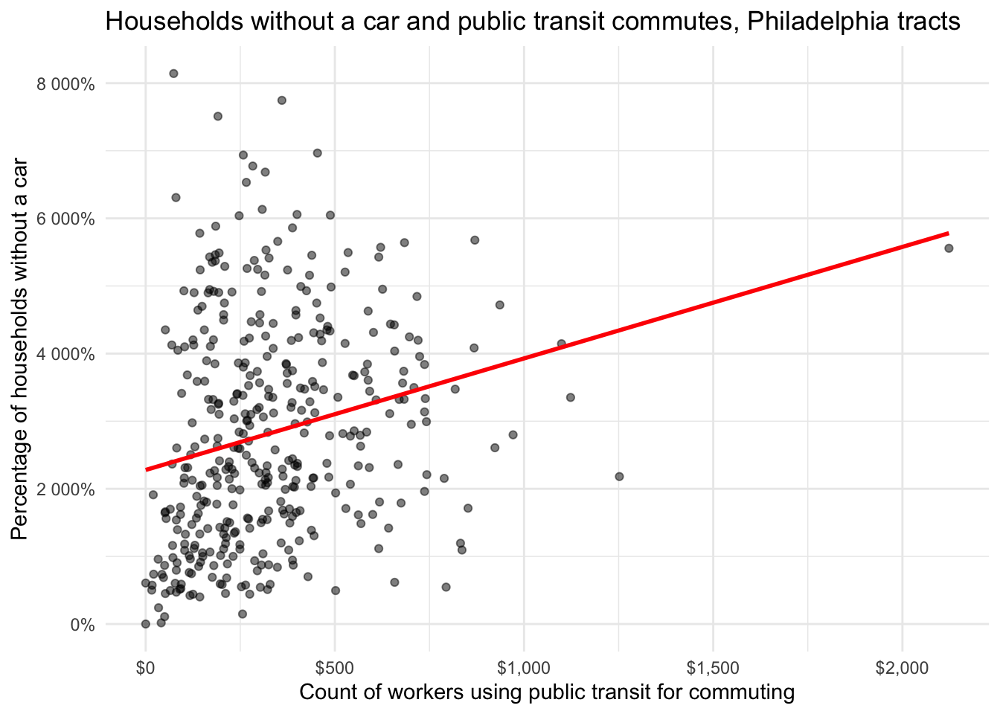
plot3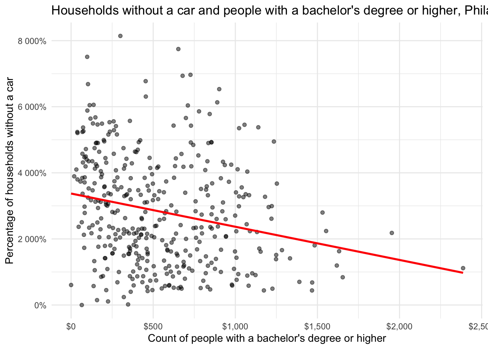
f1 <- y ~ medhhinc + publictransit + bachelors
m1 <- lm(f1, data = tracts)
summary(m1)
Call:
lm(formula = f1, data = tracts)
Residuals:
Min 1Q Median 3Q Max
-34.572 -11.789 -2.943 9.297 51.399
Coefficients:
Estimate Std. Error t value Pr(>|t|)
(Intercept) 3.482e+01 2.159e+00 16.126 < 2e-16 ***
medhhinc -1.370e-04 2.887e-05 -4.745 2.94e-06 ***
publictransit 1.358e-02 3.488e-03 3.894 0.000116 ***
bachelors -3.802e-03 2.601e-03 -1.461 0.144722
---
Signif. codes: 0 '***' 0.001 '**' 0.01 '*' 0.05 '.' 0.1 ' ' 1
Residual standard error: 14.96 on 384 degrees of freedom
Multiple R-squared: 0.1696, Adjusted R-squared: 0.1631
F-statistic: 26.14 on 3 and 384 DF, p-value: 2.089e-15model_log <- model_log %>%
add_row(model = "m1", added = "ACS baseline",
cv_rmse = cv_rmse(f1, tracts),
notes = "ACS baseline: income, public transit, commuting, and bachelor's degree")
model_log# A tibble: 1 × 4
model added cv_rmse notes
<chr> <chr> <dbl> <chr>
1 m1 ACS baseline 14.9 ACS baseline: income, public transit, commuting, a…Write the CV RMSE as a sentence, in your outcome’s units: “On tracts it hasn’t seen, the baseline model misses by about 14.89%.”
Save this map. You’ll compare it to your final model’s map in Part 6.
tracts <- tracts %>% mutate(resid_m1 = residuals(m1))
ggplot(tracts) +
geom_sf(aes(fill = resid_m1), color = NA) +
scale_fill_gradient2(low = "#2166ac", mid = "grey95", high = "#b2182b", midpoint = 0) +
theme_void() +
labs(title = "Baseline model: where it's wrong",
subtitle = "Red = actual higher than predicted",
fill = "Residual")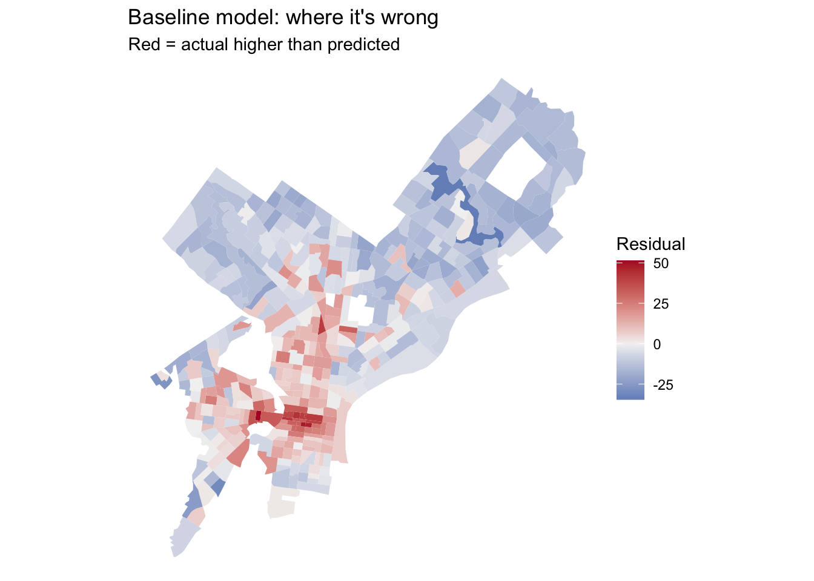
Answer: Where do the residuals cluster? What might those places have in common that your model doesn’t know about? Use this answer to choose your open data layers in Part 3.
Your answer: The residuals cluster around center city. These areas are the most dense parts of the city, and thus it is very expensive to own a car here. Difficult parking, easy walkability, and good access to public transit discourage residents in these areas to own cars. Although the model accounts for commuting by public transit, it does not account for how expensive parking may be in any given census tract.
Many of the city’s datasets on OpenDataPhilly are served through a Carto SQL API. You send a SQL query in a URL, and it sends back data. Ask for format=GeoJSON and st_read() reads the result directly, just like the Indego feed in Week 4.
The pattern:
https://phl.carto.com/api/v2/sql?format=GeoJSON&q=SELECT ... FROM table_name WHERE ...Three pieces of SQL are all you need:
SELECT the_geom, column1, column2 chooses which columns come back. Always include the_geom, or you get no geometry.FROM table_name chooses the dataset.WHERE ... filters rows. Filter in the query, not in R. Some tables have millions of rows, and pulling everything will be slow or fail.This helper builds the URL for you. Spaces and symbols in a URL need encoding, and URLencode() handles that.
carto_get <- function(sql) {
url <- paste0("https://phl.carto.com/api/v2/sql?format=GeoJSON&q=", URLencode(sql))
st_read(url, quiet = TRUE)
}On a dataset’s OpenDataPhilly page, look for the API link. The table name is the word after FROM in the example query. To see what values a column takes before you filter on it, ask for a count in CSV format:
# What kinds of crime are in the incidents table in 2023?
url <- paste0("https://phl.carto.com/api/v2/sql?format=csv&q=",
URLencode("SELECT text_general_code, COUNT(*) AS n
FROM incidents_part1_part2
WHERE dispatch_date >= '2023-01-01' AND dispatch_date < '2024-01-01'
GROUP BY text_general_code ORDER BY n DESC"))
read_csv(url)# A tibble: 32 × 2
text_general_code n
<chr> <dbl>
1 Thefts 37054
2 Other Assaults 25986
3 Motor Vehicle Theft 22478
4 Vandalism/Criminal Mischief 17346
5 All Other Offenses 13334
6 Theft from Vehicle 13002
7 Fraud 7661
8 Aggravated Assault No Firearm 5134
9 Burglary Residential 3800
10 Aggravated Assault Firearm 3320
# ℹ 22 more rowsburglary <- carto_get(
"SELECT the_geom, text_general_code, dispatch_date
FROM incidents_part1_part2
WHERE dispatch_date >= '2023-01-01' AND dispatch_date < '2024-01-01'
AND text_general_code = 'Burglary Residential'"
) %>%
st_transform(st_crs(tracts)) # Carto returns EPSG 4326; translate immediately
nrow(burglary)[1] 3800Some records have no location. Drop them with filter(!st_is_empty(burglary)), and count how many you lost. Every point you drop is a point that won’t be counted.
These tables were available on Carto as of this fall. If a query fails, check the dataset’s OpenDataPhilly page for the current table name.
| Data | Table | Filter on | Notes |
|---|---|---|---|
| Crime incidents | incidents_part1_part2 |
dispatch_date, text_general_code |
Pick specific offense types |
| Shooting victims | shootings |
date_ |
Small enough to pull several years |
| 311 requests | public_cases_fc |
requested_datetime, service_name |
Use the count query above to see service names |
| Indego stations | (not Carto) https://www.rideindego.com/stations/json/ |
— | The Week 4 feed |
Datasets not on Carto often have a GeoJSON download link on their OpenDataPhilly page. st_read() reads those URLs too. For example, navigage to https://opendataphilly.org/, find a dataset that you’d like to import. I found city landmarks. On the page there is a link to a GeoJSON file. I simply right-clicked on that hyperlink and copied it and then used st_read() and pasted the link:
landmarks <- st_read(“https://hub.arcgis.com/api/v3/datasets/6b2fe4a0fbe14e0a8e6afceaea230b8e_0/downloads/data?format=geojson&spatialRefId=4326&where=1%3D1”)
Pull at least two layers that you think relate to your outcome. Base your choice on your Part 2C answer.
violations_url <- paste0(
"https://phl.carto.com/api/v2/sql?q=",
URLencode(
"SELECT *
FROM parking_violations
LIMIT 10000"
),
"&format=geojson"
)
violations <- st_read(violations_url, quiet = TRUE) %>%
st_transform(st_crs(tracts))
fatal_crashes_url <- paste0(
"https://phl.carto.com/api/v2/sql?q=",
URLencode("SELECT * FROM fatal_crashes"),
"&format=geojson"
)
fatal_crashes <- st_read(
fatal_crashes_url,
quiet = TRUE
) %>%
st_transform(st_crs(tracts))
violationsSimple feature collection with 10000 features and 14 fields (with 1027 geometries empty)
Geometry type: POINT
Dimension: XY
Bounding box: xmin: 2662904 ymin: 216381 xmax: 2741341 ymax: 302546.7
Projected CRS: NAD83 / Pennsylvania South (ftUS)
First 10 features:
cartodb_id anon_ticket_number issue_datetime state anon_plate_id
1 1 1777797 2013-08-22 08:36:00 PA 878255
2 2 1777798 2013-09-23 17:52:00 PA 878255
3 3 1777799 2013-11-23 07:25:00 NJ 328900
4 4 1777800 2013-01-18 17:56:00 NJ 244961
5 5 1777801 2013-05-17 08:11:00 PA 665834
6 6 1777802 2013-10-15 08:10:00 PA 847624
7 7 1777803 2013-02-06 07:44:00 NJ 201017
8 8 1777804 2013-09-28 04:48:00 NJ 201017
9 9 1777805 2013-10-03 03:09:00 NJ 201017
10 10 1777806 2013-11-24 11:52:00 NJ 201017
division location violation_desc fine issuing_agency
1 0001 212 N 12TH ST EXPIRED INSPECTION 41 PPA
2 0001 900 RACE ST METER EXPIRED CC 36 PPA
3 0001 5448 GERMANTOWN AVE METER EXPIRED 26 PPA
4 400 SPRINGGA METER EXPIRED CC 36 PPA
5 0001 1000 FILBERT ST METER EXPIRED CC 36 PPA
6 1400 CALLOWHILL ST METER EXPIRED CC 36 PPA
7 0001 130 ARCH ST METER EXPIRED CC 36 PPA
8 0001 1130 N 4TH ST STOPPING PROHIBITED 51 PPA
9 0001 1618 S BROAD ST STREET CLEANING 31 PPA
10 0001 100 S 4TH ST METER EXPIRED CC 36 PPA
lat lon gps zip_code geometry
1 39.95625 -75.15894 FALSE 19107 POINT (2694776 237576.1)
2 39.95523 -75.15473 FALSE 19107 POINT (2695966 237239.7)
3 40.03417 -75.17239 FALSE 19144 POINT (2690179 265839.7)
4 NA NA NA POINT EMPTY
5 39.95266 -75.15729 FALSE 19107 POINT (2695276 236282.1)
6 39.95971 -75.16290 FALSE 19130 POINT (2693628 238803.8)
7 39.95189 -75.14295 FALSE 19106 POINT (2699303 236120.1)
8 39.96863 -75.14338 FALSE 19123 POINT (2699003 242209.8)
9 39.92986 -75.16856 FALSE 19145 POINT (2692362 227887.9)
10 39.94808 -75.14776 FALSE 19106 POINT (2697997 234693)fatal_crashesSimple feature collection with 942 features and 21 fields (with 4 geometries empty)
Geometry type: POINT
Dimension: XY
Bounding box: xmin: 1222777 ymin: 210683.9 xmax: 2748570 ymax: 1065003
Projected CRS: NAD83 / Pennsylvania South (ftUS)
First 10 features:
cartodb_id year district dc_number date_ primary_st
1 1 2019 07 016187 2019-06-20 Bustleton Ave.
2 2 2019 01 028598 2019-06-20 Passyunk Ave.
3 3 2019 25 047654 2019-06-11 Roosevelt Blvd.
4 4 2019 02 035797 2019-06-26 Roosevelt Blvd.
5 5 2019 09 025984 2019-06-28 Sprin Garden St.
6 6 2019 25 054903 2019-07-05 Allegheny Ave.
7 7 2019 25 056062 2019-07-08 Broad st.
8 8 2019 39 058498 2019-07-11 Fox St.
9 9 2019 15 071212 2019-07-15 Paul St.
10 10 2019 25 059050 2019-07-19 Hunting Park Ave.
secondary_ age sex
1 13500 Block 31 F
2 1700 Block W. 75 M
3 400 Block "W" 22 M
4 7200 Block 74 F
5 2500 Block 20 M
6 3rd St. 44 M
7 Erie Ave. 54 M
8 Midvale Ave. 33 M
9 4400 Block 66 M
10 Whitaker Ave 41 F
crash_type
1 Single vehicle lost control, left roadway, struck pole
2 Victim was crossing Ave. when struck by vehicle leaving parking spot
3 Single vehicle crash, speeding, lost control, struck a tree. Diver pronounced dead at scene.
4 Victim walking in roadway, struck by passing vehicle that kept going.
5 Single veh. Crash. High speed, lost control, struck concrete medians
6 Bicyclist S/B on 3rd St. at high speed entered roadway against red light, was struck by Unit #1 W/B on Allegheny Ave.
7 Victim is Septa employee working, fell onto tracks and struck by train
8 Unit #2 made left into path of m/c ejecting operator. Unit #2 fled scene post crash.
9 Unit #1 inexplicably struck numerous vehicles. Delayed fatality.
10 Victim in unit #1 struck vehicle in front of her at high speed.
hit_____ru veh1 veh2 arrest_yes investigat dc_key point_x
1 No Auto Fixed Object No No Charges 201907016187 -75.01378
2 No Auto Pedestrian No Pending 201901028598 -75.17569
3 No Auto Fixed Object No No Charges 201925047654 -75.13211
4 Yes unk Pedestrian <NA> Pending 201902035797 -75.05465
5 No M/C Fixed Object No No Charges 201909025984 -75.18189
6 No Auto Bicycle No No Charges 201925054903 -75.13565
7 No Train Pedestrian No No Charges 201925056062 -75.15054
8 Yes M/C Auto <NA> Pending 201939058498 -75.18436
9 No Auto Parked No Medical. 201915071212 -75.08616
10 No Auto Auto No No charges 201925059050 -75.11939
point_y time_of_day__24hrs_ gdb_geomattr_data objectid
1 40.12915 <NA> <NA> 1
2 39.92441 <NA> <NA> 2
3 40.02377 <NA> <NA> 3
4 40.04465 <NA> <NA> 4
5 39.96448 <NA> <NA> 5
6 39.99938 <NA> <NA> 6
7 40.00996 <NA> <NA> 7
8 40.01969 <NA> <NA> 8
9 40.01197 <NA> <NA> 9
10 40.01301 <NA> <NA> 10
geometry
1 POINT (2733501 301755.6)
2 POINT (2690420 225845.4)
3 POINT (2701564 262383.1)
4 POINT (2723016 270639.4)
5 POINT (2688258 240383.2)
6 POINT (2700836 253474.2)
7 POINT (2696555 257201.8)
8 POINT (2686981 260469.1)
9 POINT (2714556 258470.2)
10 POINT (2705244 258572.1)Answer: Why these layers? What do you expect them to capture that the ACS variables don’t?
Your answer: I chose these layers because they detail what the driving situations like on the street. The first layer shows parking violations and the second shows fatal crashes. People living in areas where they are more likely to receive parking violation tickets or experience a fatal crash are less likely to own cars. Intially, I wanted to use parking permits and walkability scores but I was having a very difficult time handling the data. I also consulted AI for the code because I kept running into errors with the initial code.
Every feature below reuses a Week 4 tool. The worked examples use burglaries and Indego stations; you build the same types from your own layers.
How many burglaries fall in each tract?
tracts <- tracts %>%
mutate(n_burglary = lengths(st_intersects(., burglary)))
summary(tracts$n_burglary) Min. 1st Qu. Median Mean 3rd Qu. Max.
0.000 4.000 7.000 9.479 13.000 48.000 A tract with no burglaries gets 0, not NA, so Rule 1 is safe.
Raw counts mostly measure tract size. A big tract has more of everything. Normalize by area, by population, or by housing units, depending on what makes sense for the thing you’re counting.
tracts <- tracts %>%
mutate(
area_sqmi = as.numeric(st_area(.)) / 27878400, # sq ft in a sq mile
burglary_per_sqmi = n_burglary / area_sqmi,
burglary_per_1k = n_burglary / total_popE * 1000
)If a tract has 40 residents and 3 burglaries, its rate is 75 per 1,000, which is a huge number built on tiny counts. Look at the tracts with the highest per-capita rates before you trust them. This is the Week 3 lesson about small denominators again.
How far is each tract from its nearest Indego station? Use the Week 4 pattern: find the nearest feature, then measure to it element by element.
stations <- st_read("https://www.rideindego.com/stations/json/", quiet = TRUE) %>%
st_transform(st_crs(tracts))
tract_pts <- st_point_on_surface(tracts) # always inside the tract, unlike a centroid
nearest_idx <- st_nearest_feature(tract_pts, stations)
tracts <- tracts %>%
mutate(dist_station_mi = as.numeric(
st_distance(tract_pts, stations[nearest_idx, ], by_element = TRUE)) / 5280)Sometimes the “thing” is a single location, such as City Hall as a stand-in for the center of the regional economy.
city_hall <- st_sfc(st_point(c(-75.1636, 39.9526)), crs = 4326) %>%
st_transform(st_crs(tracts))
tracts <- tracts %>%
mutate(dist_ch_mi = as.numeric(st_distance(tract_pts, city_hall)) / 5280)Build at least three spatial features from your own layers, and use at least two types (count, density, nearest distance, distance to a place). After each one, fit a model, cross-validate it, and log it.
tracts_proj <- st_transform(tracts, 2272)
violations_proj <- st_transform(violations, 2272)
fatal_proj <- st_transform(fatal_crashes, 2272)
# join each violation point to a census tract
violations_joined <- st_join(
violations_proj,
tracts_proj["GEOID"],
join = st_within
)
# count violations in each tract
violation_counts <- violations_joined |>
st_drop_geometry() |>
count(GEOID, name = "parking_violations")
# add counts to tracts and replace missing counts with zero
tracts_proj <- tracts_proj |>
left_join(violation_counts, by = "GEOID") |>
mutate(parking_violations = coalesce(parking_violations, 0L))
# assign crashes to tracts
crashes_joined <- st_join(
fatal_proj,
tracts_proj["GEOID"],
join = st_within
)
# count crashes per tract
crash_counts <- crashes_joined |>
st_drop_geometry() |>
count(GEOID, name = "fatal_crashes")
# calculate tract area in square kilometers and density
tracts_proj <- tracts_proj |>
left_join(crash_counts, by = "GEOID") |>
mutate(
fatal_crashes = coalesce(fatal_crashes, 0L),
area_sqkm = as.numeric(st_area(geometry)) / 1e6,
crash_density = fatal_crashes / area_sqkm
)
# remove crashes with missing or empty geometry
fatal_valid <- fatal_proj[
!st_is_empty(fatal_proj) &
!is.na(st_geometry(fatal_proj)),
]
# calculate tract centroids
tract_centroids <- st_centroid(tracts_proj)
# find nearest crash for each centroid
nearest_crash <- st_nearest_feature(
tract_centroids,
fatal_valid
)
# calculate distances in meters
tracts_proj$nearest_crash_m <- as.numeric(
st_distance(
tract_centroids,
fatal_valid[nearest_crash, ],
by_element = TRUE
)
)
# model 2: parking violations
f2 <- y ~ parking_violations
model_log <- model_log |>
add_row(
model = "m2",
added = "parking_violations",
cv_rmse = cv_rmse(f2, tracts_proj),
notes = "Count of parking violations within each census tract"
)
# model 3: fatal crash density
f3 <- y ~ parking_violations + crash_density
model_log <- model_log |>
add_row(
model = "m3",
added = "crash_density",
cv_rmse = cv_rmse(f3, tracts_proj),
notes = "Fatal crashes per square kilometer"
)
# model 4: distance to nearest fatal crash
f4 <- y ~ parking_violations + crash_density + nearest_crash_m
model_log <- model_log |>
add_row(
model = "m4",
added = "nearest_crash_m",
cv_rmse = cv_rmse(f4, tracts_proj),
notes = "Distance from tract centroid to nearest fatal crash, in meters"
)
model_log# A tibble: 4 × 4
model added cv_rmse notes
<chr> <chr> <dbl> <chr>
1 m1 ACS baseline 14.9 ACS baseline: income, public transit, commut…
2 m2 parking_violations 15.4 Count of parking violations within each cens…
3 m3 crash_density 14.7 Fatal crashes per square kilometer
4 m4 nearest_crash_m 14.3 Distance from tract centroid to nearest fata…Answer: Which spatial feature helped most? Did any feature you expected to help do nothing, or make CV RMSE worse? Why might that be?
Your answer: The distance to the nearest crash has the lowest CV RMSE, 14.34, but it is not significantly better than the initial CV RMSE which was 14.89. The parking violations spatial feature has a worse RMSE. This could be because it is more likely to receive a parking violation in center city, the area with the highest residuals, than in other parts of the city.
Watch the October 9 recorded lecture before you start this part. Below is a summary to work from.
So far, every predictor has entered the model as a straight line: each additional unit of X changes predicted Y by the same amount, everywhere. Transformations let the model bend. For prediction, the question is simply does the bend lower CV RMSE? For interpretation, each transformation changes what a coefficient means, so you need to know how to read it.
Keep your outcome y untransformed in this assignment. If you model log(y), your CV RMSE comes out in log units and can’t be compared to the other rows in your log. (Predicting a logged outcome well requires back-transforming, which is an A4 topic.)
Many urban variables are skewed: a few tracts have huge values, and most have small ones. Income, density, and counts are typical. A log compresses the long tail, so a model can use the difference between 1 and 10 as well as the difference between 100 and 1,000.
ggplot(tracts, aes(x = burglary_per_sqmi)) + geom_histogram(bins = 30) + theme_minimal()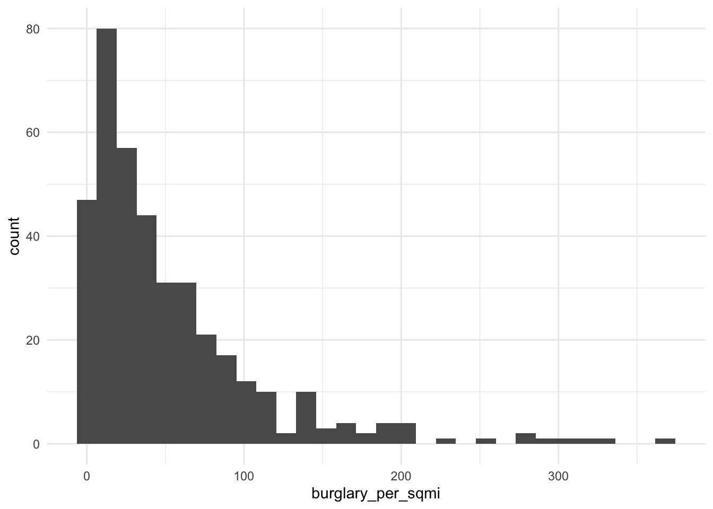
ggplot(tracts, aes(x = log1p(burglary_per_sqmi))) + geom_histogram(bins = 30) + theme_minimal()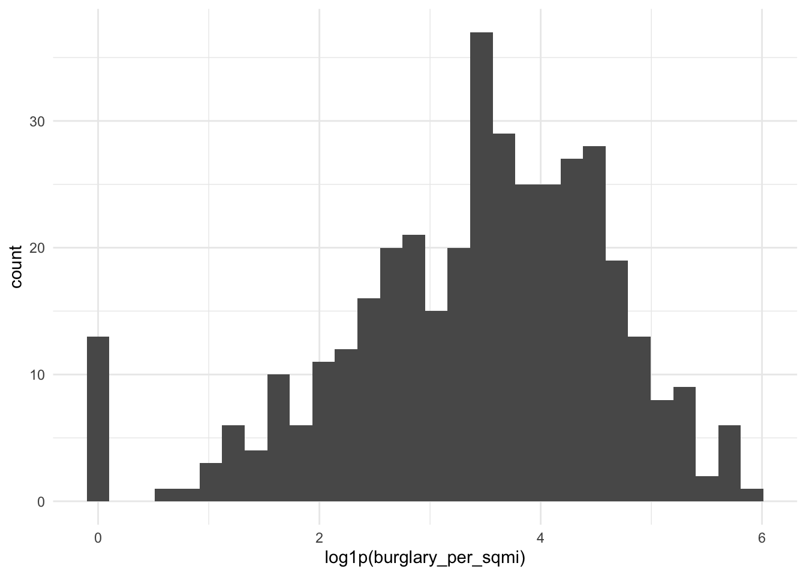
log(0) is -Inf, and it will break your model. Counts and densities often include zeros. Use log1p(x), which computes log(x + 1), for anything that can be 0.
Reading the coefficient: when a predictor is logged, a 1% increase in X goes with a change of about β/100 in Y, in Y’s units. With log1p, this reading is approximate for small values of X.
If your scatterplot bends (rising and then flattening, or falling and then rising), a squared term lets the line curve. Write it with I(), which tells R to do the arithmetic rather than read ^ as formula syntax.
m_sq <- lm(y ~ dist_ch_mi + I(dist_ch_mi^2), data = tracts)
summary(m_sq)
Call:
lm(formula = y ~ dist_ch_mi + I(dist_ch_mi^2), data = tracts)
Residuals:
Min 1Q Median 3Q Max
-27.969 -8.586 -0.840 7.851 43.302
Coefficients:
Estimate Std. Error t value Pr(>|t|)
(Intercept) 45.74304 1.78017 25.696 < 2e-16 ***
dist_ch_mi -4.08558 0.64524 -6.332 6.75e-10 ***
I(dist_ch_mi^2) 0.08658 0.04850 1.785 0.075 .
---
Signif. codes: 0 '***' 0.001 '**' 0.01 '*' 0.05 '.' 0.1 ' ' 1
Residual standard error: 12.91 on 385 degrees of freedom
Multiple R-squared: 0.3795, Adjusted R-squared: 0.3762
F-statistic: 117.7 on 2 and 385 DF, p-value: < 2.2e-16Reading the coefficient: you can’t read either coefficient alone anymore. The effect of X depends on where you are along X. A positive linear term with a negative squared term means Y rises with X and then levels off or turns down. Plot the fitted curve to see it:
ggplot(tracts, aes(x = dist_ch_mi, y = y)) +
geom_point(alpha = 0.4) +
geom_smooth(method = "lm", formula = y ~ x + I(x^2), se = FALSE, color = "red") +
theme_minimal()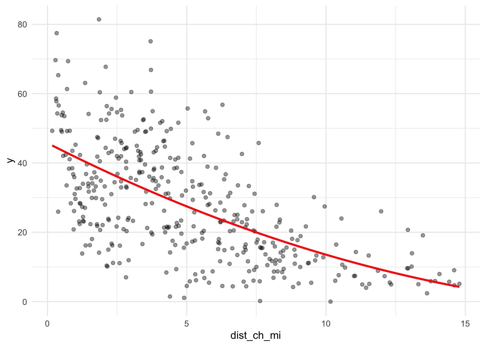
Sometimes a number works better as groups, either because the relationship isn’t smooth or because the categories are meaningful. You can make categories from any variable with case_when() or cut(), and then make sure R treats them as a factor.
tracts <- tracts %>%
mutate(
ring = case_when(
dist_ch_mi < 2 ~ "Core",
dist_ch_mi < 5 ~ "Inner",
TRUE ~ "Outer"
),
ring = factor(ring, levels = c("Core", "Inner", "Outer"))
)
tracts %>% st_drop_geometry() %>% count(ring) ring n
1 Core 80
2 Inner 136
3 Outer 172m_cat <- lm(y ~ ring, data = tracts)
summary(m_cat)
Call:
lm(formula = y ~ ring, data = tracts)
Residuals:
Min 1Q Median 3Q Max
-33.837 -10.429 -1.548 8.576 42.791
Coefficients:
Estimate Std. Error t value Pr(>|t|)
(Intercept) 38.635 1.523 25.368 <2e-16 ***
ringInner -3.710 1.919 -1.933 0.0539 .
ringOuter -20.431 1.843 -11.083 <2e-16 ***
---
Signif. codes: 0 '***' 0.001 '**' 0.01 '*' 0.05 '.' 0.1 ' ' 1
Residual standard error: 13.62 on 385 degrees of freedom
Multiple R-squared: 0.3097, Adjusted R-squared: 0.3061
F-statistic: 86.35 on 2 and 385 DF, p-value: < 2.2e-16Reading the coefficients: R turns a factor with k categories into k − 1 dummy variables. The category left out is the reference level (here, “Core,” the first level). Each coefficient is the difference from the reference: ringOuter is how much higher or lower predicted Y is in outer tracts compared to core tracts, holding everything else in the model constant. To change the reference, use relevel(ring, ref = "Outer").
If a category has only a handful of tracts, its coefficient is unstable, and in cross-validation some folds may not contain it at all. Aim for at least 20 tracts per category.
Try at least one of each: a log, a squared term, and a categorical variable. Choose which variables to transform based on your plots, not at random. Log each model.
# plot 1: Parking violations per census tract
plot1 <- hist(
tracts_proj$parking_violations,
main = "Parking Violations per Census Tract",
xlab = "Number of violations",
ylab = "Number of census tracts",
col = "lightblue",
border = "white"
)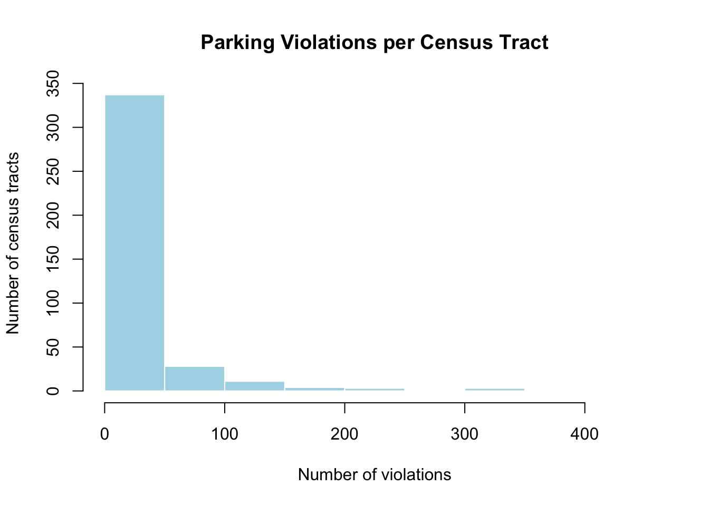
# plot 2: Fatal crash density
plot2 <- hist(
tracts_proj$crash_density,
main = "Fatal Crash Density",
xlab = "Fatal crashes per square kilometer",
ylab = "Number of census tracts",
col = "lightcoral",
border = "white"
)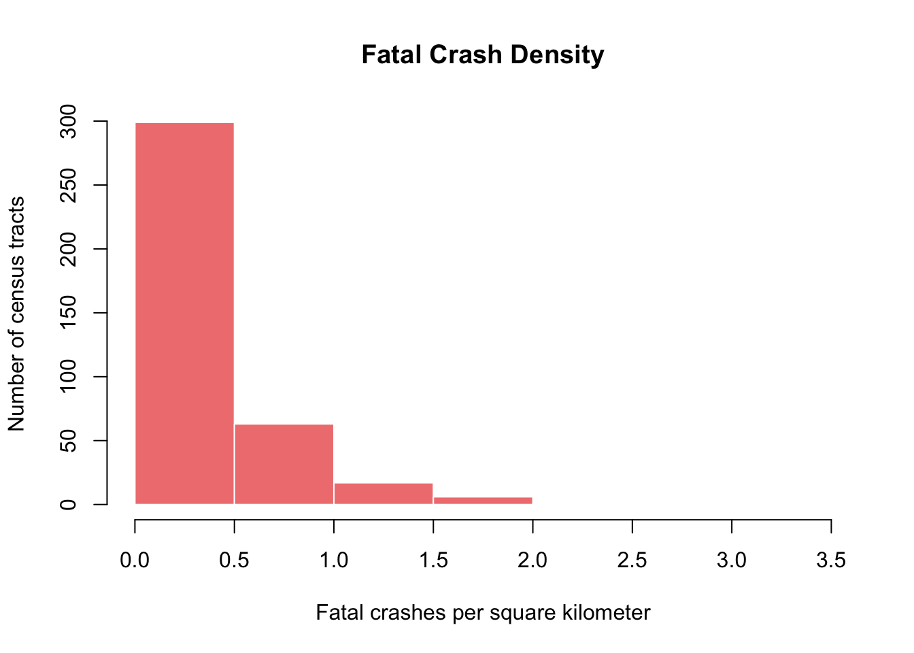
# plot 3: Distance to nearest fatal crash
plot3 <- hist(
tracts_proj$nearest_crash_m,
main = "Distance to Nearest Fatal Crash",
xlab = "Distance (meters)",
ylab = "Number of census tracts",
col = "lightgreen",
border = "white"
)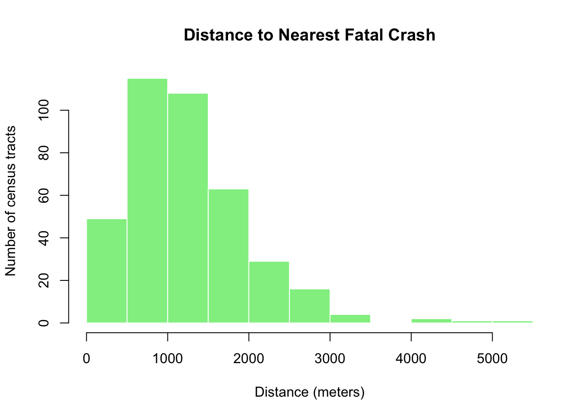
plot1$breaks
[1] 0 50 100 150 200 250 300 350 400 450
$counts
[1] 337 28 11 4 3 1 3 0 1
$density
[1] 1.737113e-02 1.443299e-03 5.670103e-04 2.061856e-04 1.546392e-04
[6] 5.154639e-05 1.546392e-04 0.000000e+00 5.154639e-05
$mids
[1] 25 75 125 175 225 275 325 375 425
$xname
[1] "tracts_proj$parking_violations"
$equidist
[1] TRUE
attr(,"class")
[1] "histogram"plot2$breaks
[1] 0.0 0.5 1.0 1.5 2.0 2.5 3.0 3.5
$counts
[1] 299 63 17 6 1 1 1
$density
[1] 1.541237113 0.324742268 0.087628866 0.030927835 0.005154639 0.005154639
[7] 0.005154639
$mids
[1] 0.25 0.75 1.25 1.75 2.25 2.75 3.25
$xname
[1] "tracts_proj$crash_density"
$equidist
[1] TRUE
attr(,"class")
[1] "histogram"plot3$breaks
[1] 0 500 1000 1500 2000 2500 3000 3500 4000 4500 5000 5500
$counts
[1] 49 115 108 63 29 16 4 0 2 1 1
$density
[1] 2.525773e-04 5.927835e-04 5.567010e-04 3.247423e-04 1.494845e-04
[6] 8.247423e-05 2.061856e-05 0.000000e+00 1.030928e-05 5.154639e-06
[11] 5.154639e-06
$mids
[1] 250 750 1250 1750 2250 2750 3250 3750 4250 4750 5250
$xname
[1] "tracts_proj$nearest_crash_m"
$equidist
[1] TRUE
attr(,"class")
[1] "histogram"tracts_proj$lnparking_violations <- log1p(tracts_proj$parking_violations)f_log <- y ~ lnparking_violations + crash_density + nearest_crash_m
model_log <- model_log %>%
add_row(model = "m5", added = "log of parking violations",
cv_rmse = cv_rmse(f_log, tracts_proj),
notes = "logged parking violations, crash density, nearest crashes")
# squared term
# categorical
model_log# A tibble: 5 × 4
model added cv_rmse notes
<chr> <chr> <dbl> <chr>
1 m1 ACS baseline 14.9 ACS baseline: income, public transit,…
2 m2 parking_violations 15.4 Count of parking violations within ea…
3 m3 crash_density 14.7 Fatal crashes per square kilometer
4 m4 nearest_crash_m 14.3 Distance from tract centroid to neare…
5 m5 log of parking violations 14.2 logged parking violations, crash dens…Answer: Which transformation helped most? For your categorical variable, write one sentence reading one of its coefficients correctly, naming the reference level.
Your answer:
Combine the features and transformations that earned their place, judged by CV RMSE, not p-values.
f_final <- y ~ lnparking_violations + crash_density + nearest_crash_m + medhhinc + publictransit + bachelors
m_final <- lm(f_final, data = tracts_proj)
summary(m_final)
Call:
lm(formula = f_final, data = tracts_proj)
Residuals:
Min 1Q Median 3Q Max
-32.574 -8.637 -0.934 7.868 39.060
Coefficients:
Estimate Std. Error t value Pr(>|t|)
(Intercept) 3.252e+01 2.607e+00 12.473 < 2e-16 ***
lnparking_violations 5.086e+00 4.649e-01 10.940 < 2e-16 ***
crash_density 4.839e-01 1.810e+00 0.267 0.78932
nearest_crash_m -2.404e-03 1.027e-03 -2.342 0.01971 *
medhhinc -1.539e-04 2.529e-05 -6.084 2.85e-09 ***
publictransit 8.229e-03 2.990e-03 2.752 0.00620 **
bachelors -7.041e-03 2.231e-03 -3.156 0.00173 **
---
Signif. codes: 0 '***' 0.001 '**' 0.01 '*' 0.05 '.' 0.1 ' ' 1
Residual standard error: 12.58 on 381 degrees of freedom
Multiple R-squared: 0.4173, Adjusted R-squared: 0.4081
F-statistic: 45.47 on 6 and 381 DF, p-value: < 2.2e-16model_log <- model_log %>%
add_row(model = "final", added = "lnparking_violations",
cv_rmse = cv_rmse(f_final, tracts_proj),
notes = "logged parking violations, crash density, nearest crash, median hh income, public transit commuters, bachelor's degree or higher")
model_log# A tibble: 6 × 4
model added cv_rmse notes
<chr> <chr> <dbl> <chr>
1 m1 ACS baseline 14.9 ACS baseline: income, public transit,…
2 m2 parking_violations 15.4 Count of parking violations within ea…
3 m3 crash_density 14.7 Fatal crashes per square kilometer
4 m4 nearest_crash_m 14.3 Distance from tract centroid to neare…
5 m5 log of parking violations 14.2 logged parking violations, crash dens…
6 final lnparking_violations 12.6 logged parking violations, crash dens…tracts_proj <- tracts_proj %>% mutate(resid_final = residuals(m_final))
ggplot(tracts_proj) +
geom_sf(aes(fill = resid_final), color = NA) +
scale_fill_gradient2(low = "#2166ac", mid = "grey95", high = "#b2182b", midpoint = 0) +
theme_void() +
labs(title = "Final model: where it's wrong",
subtitle = "Red = actual higher than predicted",
fill = "Residual")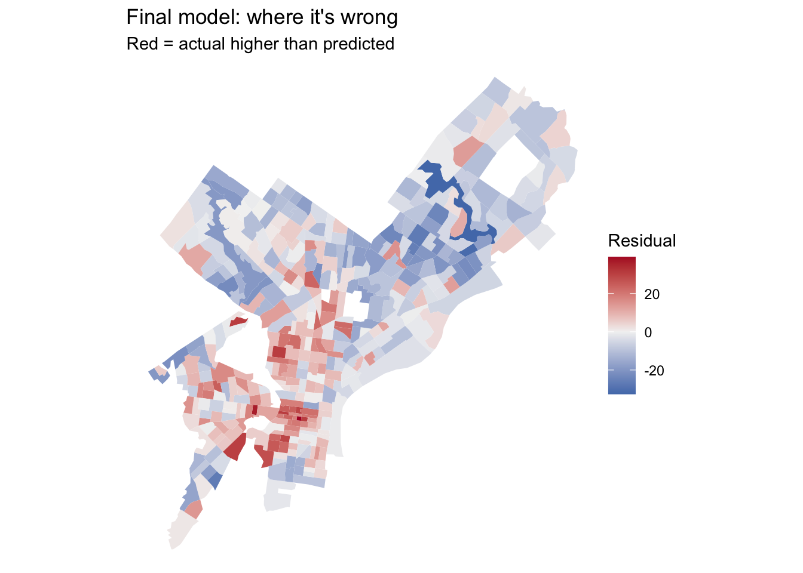
Put your two residual maps side by side, or put them next to each other in the rendered document. Did the clusters from Part 2C shrink? Where did they stay? No, I think that the residuals got bigger :/
ggplot(tracts_proj, aes(x = y_cv, y = abs(resid_final))) +
geom_point(alpha = 0.5) +
geom_smooth(se = FALSE) +
labs(x = "CV of your outcome estimate (%)", y = "Size of the miss") +
theme_minimal()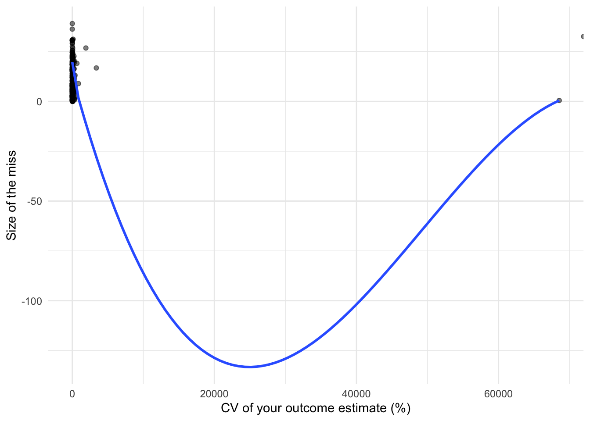
Answer in prose, drawing on your model log (incorporate our words of the day for bonus points. just kidding):
Your answer:
Render this document to HTML and submit the link on Canvas by Friday, October 16. I’ll miss you all terribly while I’m away. Please send letters or correspondences to my office mailbox.